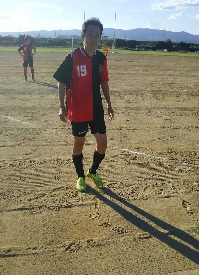
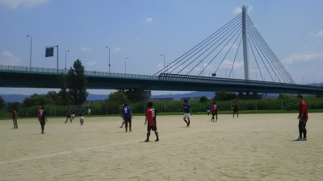
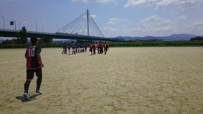
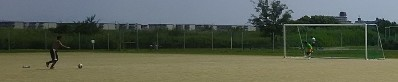
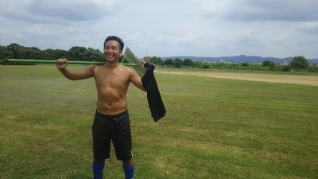

今日は合計で１４人の参加で飲み会がありました。幹事をしてくれたわだっちありがとうございました。
中々わかりにくい所で結構な人が入り口を通り過ぎて行く感じで店の窓から見て笑ってました。
スペシャルゲストとして、エガリテのレジェンドとも久々に会えて個人的にも嬉しかったし、近日中にはきっと嬉しい知らせを届けることが出来そうな気がします。
いつもこういった時にしみじみ想うのが、なんだかんだで続いてるなあ・・・自分自身が良くやっているというよりはいい仲間に恵まれたなって思ってます。
まあ、今日もお陰様でいじられたおしましたが、最終的には僕は代表じゃなくて、総務部長に格下げで社長がもりちゃんで専務がまえちゃんだそうです（笑）
また、忘年会の季節もとのことがありましたので、その時は僕が良く行っている長時間いられる店をと考えてます。
僕は早めに帰ってきましたが、ほとんどの皆さんが２次回へGOでしたが、明日の練習は出来そうなので遅れないようにお願いしますね。
本日、楽しい飲み会の時間を過ごせて良かったです。参加された皆さん、お疲れ様でした。今日は難しかった方はまたの機会にぜひ参加をお願いしますね。
昨日参加された皆さんお疲れ様でした。
昨日は攻めては決定機を2～3回逃し、守っては自陣で相手にボールを渡してしまうポカをしてしまい
非常に反省しております。すいませんでした。次回から初心にかえり、プレーしたいと思いますので宜しくお願いします。

先週がお盆で中止になって２週間ぶりでいきなり試合でしたので、僕も含めて体がなまっている人も居たのではないのかなって思います。
今日は初めてかな、夕方からの試合でしたが、集まった１６時頃はまだまだ暑くて１８時頃になってきたらこの時間帯の良さが出ましたね。
本日はそんな時間帯にかかわらず対戦して頂いた北河内さん、ありがとうございました。組織的なプレーが上手で見習うところも多かったですね。今後ともよろしくお願いいたします。
さて、今日も試合の得点シーンや覚えている範囲でのハイライトシーンを中心に話をしていきたいと思います。
２０分を４本しました。
１本目は特に北河内さんはギリギリで人数が揃った感じだったのでアップを兼ねてといいながら、結構短めのパスを繋いで攻めてこられてましたね。
うちはタカさんがええ感じの縦パスを２本ほどしましたが、途中でキーパー専属の人？に代わってからいい感じの飛び出しで結構防がれちゃいましたね。
あとは左サイドからのライナー性のクロスをトップ下だった前ちゃんがそのままダイレクトで右サイドのゆっきーに出したのは、相手チームからも「オー」という声がありましたね。
まあ、お互いに攻めきれず得点は無かったです。
２本目は唯一得点が入りました。１点目はその前のプレーはあんまり覚えてないですが、うちが攻めていてキーパーが防いで、それを取ってさらに攻めてたらバックがヘディングでクリアしたけど、逆風もあって結構高いボールでしたが、落下点の左４５度くらいでペナエリア外あたりに居た僕が落下する前にダイレクトでボレーし、ゴールに向かってええ感じで決まりました。まあ、まぐれです（笑）。ただ、ホームランにならないようにという意識はしてたのでそれは良かったのかなって思いました。もちろんコースもたまたまです（笑）
もう１点は中盤でわだっちがトップしてたたっちゃんにええ感じの縦パス、それをたっちゃんが受けながら右に相手をかわして、ゴール正面からそのまま強烈なシュート、キーパーのファインセーブに阻まれましたが、ボールはゴール左側へ、そこにテラさんが詰めていて無人のゴールへ。さすがテラさん、この後の試合も期待できるわあってみんな思ったはず（笑）
３本目はうちが結構攻めていたと思います。タカさんが右サイドからいい感じのライナー性のクロスをまえちゃんが中央でトラップしたんだけど、ちょっとボールが前に行っちゃって相手に防がれたのが２回あり、まえちゃんがめちゃ悔しがってたけど、あのボールをインサイドで前にトラップできるだけで凄いっすよ。
んでその次はまえちゃんが中央で裏に走ったテラさんに最高のパスが通って、テラさんがドリで持ち込んでギリギリまでキーパーの様子を見て・・・もう決まったも同然、いざシュート・・めちゃゴールから近くでホームラン、それを見たまえちゃんの高笑いが印象的でした（笑）、まあテラさんはしゃがんで１０秒くらい動けんかったけど、ちなみに僕からふわっとループパス、テラさんがそれをキープして浮いているボールでデフェンスを右でふわっと交わして、さらに左でも交わして、おおすげえって見とれてたら最後は、クールポコって、同じ試合だったかは忘れたけどデフェンスに吹っ飛ばされてたし、結果はごっつあんだけかい（笑）。なんか太陽が目に入ってその残像が・・とか語ってたので詳しくカキコお願いしますね～。
でも左サイドからテラさんがライナー性のクロス上げてたっちゃんがそれをダイレクトでシュートしたのはいい感じでしたね。あれが決まってたら今までのベストゴールになったかも・・残念。
４本目は、個人的におなかの調子が悪かったからあんまり動いていないし、覚えていないっす（笑）、最初にまっとんが右サイドハーフでいい感じで躍動していましたね。
あとは違う試合でもだったけど、健気に左サイドを駆け上がってくれるよっしゃんに何とかゴールをと思ってクロス入れたけど、強い感じで申し訳なかったっすね。
あとは最後の方でゆっきーが得点決めたいオーラが出てて、前線に上がってきてたけど、絶好のポジションの時にパスがだふってごめん（涙）
まあ、そんな感じでした。まあ、年齢的なこともあるかもですが結構、全体的にはうちが押してた感じでしたね。まんちゃんは初クリーンシート？だっけ。今日は華麗な横っ飛びは無かったけど、追い風で鬼のようなゴールキックを蹴ってくれたのは覚えてるわ（笑）
まあ、そんな感じの一日でした。本日、参加された皆さんお疲れ様でした。
画像は「わてがかわちのハマやでぇ、みんなついてこんかい」です（笑）
今日もあちかった～。まあ、先週よりかは風があったかな。
今日は遅刻早退、体験参加さんを含めて１６名の参加がありました。暑い中参加してくれるメンバーには感謝です。
いつもの場所はよっしゃんが昨日に教えてくれてた通り、結構草がありました。はよヤギに食わせんかい（笑）、ちなみによっしゃんは昨日現地でポケモンGOで来たらしく、幻のキャラクター「まとのまとぞう」をGET出来たらしいです（笑）
しばらくは奥ですることになるかもですね。人数によって現地判断で移動とかもあるので、現地に来てて誰も居なさそうだったら奥でしていると思っていてください。
テラさんが１１時早退でしたので、２手に分かれてアップで鳥かごをして、テラさんタイムで早めにミニゲをしました、比較的広く取ってましたが、最初はテラさんの「珍」プレーで始まりましたが、個人的にコテンパにやられて小梅太夫状態でしたが、満足顔で悠々と帰って行きました（笑）
あとは体験参加さんがテクったり、なぜかラインから出た遠くのボールを取りに行くのがもりちゃんが多かったり、まっとんがマラドーナを超えた６人抜きをした？（笑）りとかまあ、いつもどりいろいろありましたわ。最後はわだっちからの縦パスにごろうが抜け出していい感じのゴールで終わりました。
今日はいつもより休憩時間を多くとって一本木に救われましたが、後から来たラグビーの人たちにはちょっと申し訳なかったですね。
活動後にわだっちから部として正式にと納涼会の提案がありました、幹事はまえちゃんがしてくれるそうな。日時は８月２７日（土）夕方からかな？
また詳細は第二掲示板に記載してくれるみたいなので、参加、不参加については21日のスケジュールのコメント欄に記載してください。
（記載したら、第一掲示板にも記載した旨わかるようにカキコお願いしときます）
本日、参加された皆さんお疲れ様でした。



あちち、あち、燃えているんだろうかあ・・状態でしたね。
試合中は時折日陰や風もありましたが、無風状態が結構あって灼熱のように感じてました。日陰テントを持参しましたが、うちのメンバーよりYODRIDさんのほうが良く使ってたような気が（笑）
本日はYODRIDさんのご招待で、うちとジェネシスさんと巴戦を行いました。対戦して頂いた２チームさん、本当にありがとうございました。
さて、暑さで朦朧としていたのであまり覚えてませんが、とりあえず試合ごとに簡単にダイジェスト報告したいと思います。
２０分ハーフで１チーム４試合、２本目からは１０分で給水タイムも入れてしました。
うちは最初は審判からでしたが、審判してても暑さにまいりました。YODRIDさんが１０名だったのでまんちゃんが毎回キーパーで助っ人に行ってて、合計８試合ほんとお疲れ様でした。
１本目はジェネシスさんとでした。最初は少し押し込まれる面もありましたが、うちも結構いい感じで攻めてて一進一退でしたが、１点目はうちが取りました。
バックラインでヤスさんがクリアしたボールをテラさんがキープして、右サイドバックから駆け上がっていたゆっきーにパス、そのまま切れ込んで結構距離がありましたが、強いゴロのシュート、コースも良くゴールの左ポストに当たってそのままゴールになりました。さすが「レボリューション」ゆっきー（笑）、最近調子がいいですな～。でもシュート打つときには誰の顔が浮かんだのかな？（笑）
もう一点もうちのいい感じの攻撃からでした、相変わらず他の試合でも圧倒的なスタミナで動いていたわだっちが、よっしゃんとワンツーしたりして左ハーフくらいでボールをキープ、そこにオフサイドにならないように回りこんで上がってきたおかちゃんにループパス、浮き球のままキーパーと1対１になってキーパーが前に出てきましたが、冷静にループで決めました。
個人的にはセンターバックでボールをキープしたら右サイドハーフだったテラさんにええ感じのボールを出せたのが良かったです。テラさんがジェスチャーでくれくれビームくれたので、まあ横の選択肢もあるんだけど、ああやって裏を取ろうと動いてくれたらつい出したくなっちゃいますね。
２試合目はYODRIDさんでした。試合前の整列でまえちゃんがコントしてましたが、試合になればやっぱり押されてましたね。相手の決定的なシュートミスに救われました。
いつもながらYODRIDさんはマークを外してパスを貰える位置に誰ががいるというのが徹底されている感じでしたね。僕も動けなかったから人のこと言えませんが、うちもフリーでもらえる位置に移動することを心掛けていかないと駄目ですね。いい勉強になりました。
うちも少ないチャンスが何度かありましたが、僕が右サイドで左サイドから上がってきたわだっちに我ながらナイスパス、それをわだっちがいい感じのトラップでゴールに迫る、そこに中央から上がってきたごりんさんへのパス、ごりんさんがそれをわだっちに再度折り返し、わだっちからしたらうそーん状態で、またごりんさんへパスという譲り合って結局は防がれたのがちと残念でした。２人とも思いやりのある人なので（ね、ハマさん（笑））。
３本目はジェネシスさんとでした。僕は休憩してみてましたが、うちもいい攻めしてたんですが、今度は２点取られちゃいましたね。１点目はどうだったんだろう？うーん覚えてないや。２本目はコーナーから直接入ったくらいのカーブのボールが来て、そのまま押し込まれました。セットプレーはほんとうちは弱いので、無理に競らなくてもいいので、マークは外さないことからまず心がけましょう。
うちも反撃に出て、ここぞという時にゆっきーがゴールに切れ込んでブロックされて混戦になったあと、すっとテラさんが抜けてキーパーと１対１、冷静にゴールを決めてくれました。おかちゃんが決めたらテラさんも決めるっていうのが多いような（笑）
４本目はYODRIDさんでした。若手の体力は凄いですね。攻められた時にわだっちが必死に立ちはだかってくれたんですが、一歩及ばずでそのまま相手がゴールに向かってきて、真横にパス、ずっと外してくれてた人に接待パスをドフリーで決められちゃいました。プチオフサイドぽっかったけど、まあしゃあないですね（笑）、二本目も同じ人に個人技で持ち込まれ、見事に決められました。
攻めも頑張ったんですが、もう一歩がもったいなかった。僕もドリを仕掛けて倒されて、ゴールまで４０Mくらいはあったのかな？ゴール前に味方が居なくて、まえちゃんが上がってきてくれたので、とりあえずゴール狙ったら誰かに当たって、こぼれ球を押し込んでくれるだろうって感じで、直接ゴールを狙ったら、ジャストミートでさらにゴールの上を超えて行った・・・ゴールキックの時もあれくらい飛んでくれよって嘆いていました（涙）
４時間でしたが実際は３時間ちょっとで早めに終わりました。
ほんと暑い中、参加された皆さん、お疲れ様でした。8/21が試合です、夕方ですが相手さんにも失礼ですのでメンバーが足りないってことはしたくないので、早めに都合付けて参加のほどよろしくお願いします。
画像は試合風景と、小物は最後にグランドへ（笑）、試合後の特訓の画像です。

「あつい」と言ったら魂が抜かれるというシーンが某漫画にあったけど、今日はほんとそんな一日でした。
でもドピーカンじゃなっかったし、風も少し吹いていたのがまだ救いでしたね。
本日は早退と体験参加さんとも含めてなんと、２２名の参加があり、紅白戦をばっちり出来ることになりました。ご都合付けて頂いたメンバーの皆さん、ありがとうございます。本日は欠席になった方はまた次回は参加してくださいね。体験参加の方もいきなり紅白戦でしんどかったと思いますが、また良ければ引き続き参加して頂ければとい思います。
早退の関係で２２人で出来るのが２本でしたので、僕が事前に割り振った２名でグッパーしてもらって２５分ハーフでしました。
後の残りは２０分と１５分強と適当にグッパーでチーム分けしてキーパーフリーでしましたが、結構グダグダ感がありましたね（笑）
主に最初の２試合のことについて覚えている範囲で活動報告します。（暑さでちょっと気分悪かったのであんまり覚えてなくてすみません）
チーム分けは
A（まっさん、ゆっきー、たっちゃん、テラさん、ぐっさん、おかちゃん、タカさん、ごりん、ふっかん、
ごろう、体験参加さん）
B（ヤスさん、まえちゃん、よっしー、スガちゃん、まっとん、わっち、よっしゃん、わだっち、ハマさん
つよぽん、まんちゃん）
Aチームはキーパーは８分ごとに交代、Bチームはまんちゃん
でしました。
１本目は比較的攻守のバランスが良かったＡチームが押し気味でした。１点目はゴール前からこぼれてきたボールをたっちゃんがキープして、結構距離があったんですが、しかも効き足とは違う左足で強烈なミドルシュートが決まりました。あの距離からはお見事でした。
２点目もＡチームでした。右サイドからのクロスをフォワードがからぶった？それとも意図的なスルーかはわかりませんが、ゴールの左側にボールが流れて行き、そこに詰めていた体験参加さんが冷静に決めてくれました。
あ、ちなみに１本目センターバックしながら撮った試合風景が第二掲示板から見れますので、また良かったら見といてください。（動きながらと逆光気味でピンボケっぽくてすみません）
Ｂチームもトップ下でまえちゃんが結構キープしてたんだけど、そこからパスを受ける人が前線に居なかったので救われましたね。
あとは、たっちゃんが走りこんでの惜しいシュートや、テラさんのもらった～って感じでの待ち構えたボレーシュートが見事に振りぬいた足じゃなくて軸足に当たったりと、ふっかんからのクロスをごろうさんが「うぎょー」といつもの絶叫をしながらやっちまったとかありました。
２本目も同じチームでしました。
今度は反対にＢチームにいい感じのプレイが多かったと思います。先取点はＡチームでした。左ウイングしてた僕の前にまっとんがボールキープして、それを奪ってそのままドリブルで中に切れ込んで２人くらい交わして、キーパーと距離があったけど１対１、動きを見ててまんちゃんが一歩前に出たのを見て、トウキックでループシュート、狙い通りにゴールに決まりました。まあ、デフェンス交わしたのもたまたまだったし、狙ったけど狙い通りいったのはまぐれです。
その後はＢチームの怒涛の攻撃があった気が（笑）、惜しいプレイとして、つよぽんからの素晴らしい縦パスをわだっちがいい感じでトラップ、後一息でした。すがちゃんからよっしゃんへの素晴らしいアーリークロスもありました。
わっちが切れ込んできて、シュート。ポストに当たったのをよっしーがフリーでぱぴゅーんはいつものことだけど、汚名挽回でその後のプレーでキープしてそのままドリで交わしてシュート、ゴールを決めたのはお見事でした。
もう１点もＢチームでした、コーナーキックからの得点でしたが、こぼれ球決めたのはハマさん？正直覚えてないっす、誰かわかる方フォロー頼んます。
それにしてもううちはセットプレイからの失点が多いのを気を付けないと駄目ですね、お互いに見合っている感じがあるので、バック経験が多い方がアドバイスとかしたりキーパーと話し合ったりすることから始めていければいいですね。
あとの２本は適当間満載であんまり覚えてないっす。よっしーがボールの上に乗ってこけて、僕も土と芝の段差にこけてとか、キーパーフリーなんで明らかにキーパーが居たら取られるようなシュートは無しでと話していましたが、見極めが難しいのもありますが、ダークテラーが容赦なく、クロスからのボールを受けて、がら空きのゴールへゴロゴロシュート。わだっちが「勉強になります」ってなんの勉強やねん（笑）
とどめは、コスイヤーがドリブルするのしんどいからと言って、かなり手前からゴロでシュートとやっぱりコスイことすると天下一品ですわ（笑）
まあ、そんな感じの一日でした。本日参加された皆さん、お疲れ様でした。
今日は後の時間帯、来なかったのでグランド整備とかしましたが、エガリテ専属の整備の方がいてくれたので助かりました（笑）、それにしても似合いすぎ（笑）
来週は隣で試合です、３チーム４時間ですので各自、水分や暑さ対策をお願いしますね。
本日参加された皆さん、お疲れ様でした。
今日から時間変更になったけど、府道から土手に入るところが９時になっても入り口が開かない。じじい何やっとんじゃ状態でした（笑）
雨の影響は無いと思ってたけど、ところどころに水たまりやぬかるみが残ってました。んで、何よりも囲いがあってヤギさんの草食べ実験中みたいなのがあってヤギはそこにはいなかったけど小屋が建ってました。今日は少なくて何とかなったけど、今後も囲いがあるのなら（移動するかも）、奥ですることがメインになるかもです。
昨日の時点で珍しく参加者が１０人切りそうだなって思ってたら１名減って８人へ、まあ８人以上おるから開催しようかと思ってたら、遅刻で参加予定の方が愛車のS2000で六甲の再度山を攻めすぎて疲れてダウンとのことで結果的にはほんと久しぶりすぎるくらいの７名でしました。
奥のほうではサッカー教室もあったりで、仲良くちんまりと一緒にしたけど、草が多い場所が多くて、はよヤギに食わせろ状態でした（笑）
最初はリフティングをしました。目標１０回が中々到達しない、特にまえちゃんからの爆撃がもりちゃんとハマさんに容赦なく降り注いでました（笑）、なんだかんだで最終的には２０回超えたのが何よりです。
次に鳥かごですね。まあ、これも笑いありの感じで楽しく出来ました。
その次に初めてしましたが、ミニゴールを１つ用意して２人組でダイレクトパスしながらどちらかが最後シュートって感じでしたが、意外としんどかったけど練習になったと思います。前に走りながら相手のスピードにあわしたところにパスを出すのが難しいことやパス自体が浮いてしまったり、速度を少し上げるとパスが回らなかったり、最後の方は２人の距離を近くにしましたが、さらに難しくなりました。今後もまたしていきたいなって思います。
今日はとにかく風が無くてジメジメしてて、体力の消耗が激しいのでほんと休みも多めにして、途中で遊びとかも入れました。
いつもならサッカーゴルフをしたりするんだけど、奥で子どもサッカーしてたり、いつものゴール設置場所が草むらだらけだったので、今日はこれも初めてでしたがキックの練習をしました。
具体的にはミニゴールにボールを蹴って入れるんだけど、そのゴールの１～２M先にもう一つデフェンス代わりにゴールを置いて、前のゴールを避けて後ろのゴールに入れるって感じでしました。最初、僕が蹴ったんですが、みんなやる気なし状態でグダグダ（涙）タカさんがチーム戦にして、前のゴールにいれたらマイナス１点というゲーム性の提案をしてくれました、ほんとにタカさんありがとう。
蹴る位置はゴールから１０Mくらい後ろからでしたが、いきなり１本目からまえちゃんがダイレクトで後ろのゴールへ決めて唖然としました。さすがコントロールええわって感心してました。結構あとも惜しい人が多かったですが、ふっかんはカーブでバウンドで後ろのゴールへ決めたけど、その後前のゴールにも決めてプラマイゼロ、最後はしっかりともりちゃんが前のゴールにぶっこんでくれてオチがついて終わりました（笑）
んで、休憩を少し多く取って最後はグリーンマン（ほんと久々なのでわかんない人もいるかも？、要は緑のビブを着てどちらのチームでもパスを出せる存在を一人作る、シュートは出来ない）を入れて３対３＋αのミニゲをしました。
グリーンマンは難しかった、ていうか僕がしている時に勝手に草にひっかかってこけて、守備側があんぐりしててそれを見てた攻めがその間にゴールを決めるという新しい形のサポートをあみだしました（笑）
草むらがあったりボールが止まったり、絶えず動いていたのでしんどかったけど、少なくても楽しめるもんだなって思いました。
ふっかんがクリアしたボールがわっちの顔面にヒットしたり、ハマさんがドヤ顔でシュートしたところをギリギリでまえちゃんがクリアして高笑いしてたりと、まあいつも通り楽しく過ごせました。
最後の方は何かドローンが飛んできて、じじいの仕業かと思ったりしてました（笑）
まあ、そんな感じの一日でした。参加された皆さん、お疲れ様でした。
皆さん、先日の試合お疲れ様でした。
まっさんから出た素晴らしいパスからのキーパー1vs1の場面での初得点！
そしてあのハンド！すいません！
あれは本当にわざとじゃないんです！
反応…いえ、反射なんです！
バスケやってたからなんです！
自分、あのような反則は大っ嫌いなんです！本当です！
枚方FCさん、本当にすいませんでした。
月曜、火曜と仕事が忙しかったこと、そして炎天下の中での試合、さすがに記憶が薄れてしまったので、先日前山さんと行ったラーメン屋のレビューを書きたいと思います。
2016年6月19日
14：00
雨の中のサッカーが終わり、ハマさんにお昼行きましょうと誘ったけど断られたので、前山さんと二人でハマさんの文句を言いながら、ラーメン○○四條畷店さんへ♪
なかなかの大箱店ですが、昼ご飯時と言う事も有り少々待ってから、カウンター席に案内して頂きました。
私は看板メニューである○○ラーメン（730円）をオーダー♪
前山さんは「写真が旨そう」との理由から塩ラーメンをオーダー♪
二人ともサイドメニューのチャーシュー丼を+しました(^^)
そして嬉しいキムチバー完備！！ネギも盛り放題！！
味は…！
普通！
味は普通ですが、この心意気、嬉しいですよねー^_^
そうこうしているといよいよ、お待ちかねのラーメン到着☆
私の注文した看板メニュー、大きめのトロトロチャーシューも乗っていい感じです♪
そしてこの背脂の量！
うーん、食欲をそそりますなぁ(*^^*)
さっそくいただきます！
うん！
普通！！
というかサービスのネギ入れすぎて、味の原型とどめてないですね！
失敗です(*^^*)
サイドメニューのチャーシュー丼は…
まさかのまずめ！！
チャーシュー細かく刻みすぎてる上に、明らかに対比のおかしい紅しょうがの量により、自分が何食ってんのか見失うレベル！！
前山さんの塩ラーメンは…
「味薄すぎ！」
あまりにも無味だった為、サービスカウンターにある味噌を入れすぎて、「味噌ラーメンになってもうた。」とのことでした！
最後にお店のアンケートに低い評価を書きましたが、前山さんは「可哀想だからアンケートは持って帰ろう。」と謎の優しさを見せてくれました♪
ご馳走様でした♪
また雨の日の試合があったら行きます！
梅雨の中休みでお天気いいのはいいことなんだけど、あっつ過ぎ。風があったから少しはましだったし、屋根があってちょっと救われたかもだけど、くたくたになりましたね。
今日は久宝寺緑地でした。個人的には助っ人で３年前くらいに一度少しだけしたことがあったけど、そのチームの若造が呼び捨てでいろいろ言ってきたりして、あんまりイメージよくなかった感じですね。今回は初めて主催者として、このチームとしてもがっつりしましたが、結構管理事務所が厳しいのが印象的でした。ていうか、全部鍵でシャッターとか開けるなんて、高いし、それほどの価値あるグランドじゃないと思うな（笑）。
隣の野球場、半分以上芝なのに、競技場はなんでやねんって感じでしたね。まあ、それでも試合が出来る環境だったことでも良しとしましょう。
本日は、SPARKさんと枚方FCさんとで３チームでフレンドマッチを行いました。ほんと炎天下の中、こちらのスケジュール等にも合わせて頂き、おかげで楽しい時間を過ごせました。ありがとうございました。
いつもどおり、試合ごとに得点シーンやハイライトを書いていければと思いますが、なんせ暑かったし、あんまり覚えてないのでその点はご勘弁を。
今日は遅刻（集合１５分くらい前に今起きましたってメールの人が・・（笑））と早退とで合わせて１５人の参加がありました。参加された皆さんお疲れ様でした。
試合自体は１チーム前後半２０分で４試合と、最後に混合でエキシビジョンマッチをしました。
１本目はSPARKさんとでした。打ち合わせが終わってチームの方に戻ってくると、ポジションがワントップって・・最初はトップはきついっす（涙）
でも頑張って走りましたが暑さもあって体力が続かなかったですね。
お互いの攻めたり、守ったりいい感じでした。
１点目はボランチから前線にプレスを掛けていたテラさんが相手デフェンスのクリアミスを奪って、冷静に狙いすましたミドルシュートで先制点を奪いました。
でもコーナーキックから押し切られて、１点を返されちゃいましたね。うちはセットプレーから取られるのが多いですね。激しく競ったりは危ないのでしなくてもいいですが、やっぱり自分のマークの人が動いたりしたら、ついて行く意識は持ってたいですね。いつもその場で立っていてやられている感じですので。
２本目は枚方FCさんとでした、初顔合わせでしたが、リーグ戦とかにも参加されている感じでパス回しとかが上手で組織的な動きが出来ていましたね。年齢は５０歳平均とのことでしたが、それを感じさせない感じでした。
攻守ともにいい感じでワントップのおかちゃんが必死に走っていたのが印象的でした。
得点はうちが取りました。試合終了間際ですが、僕がセンターバックでボールをキープ、んで、トップ下してたゆっきーが最初オフサイド気味だったんだけど、意図的かは微妙やけど、ラインより戻ってきてオフサイドじゃなくなった瞬間に、回転掛けたループボールを蹴って、相手デフェンスを超えて、それをゆっきーが拾ってくれて、完全にキーパーと１対１、冷静にゴールを決めました。得点歴あるかなって思ってたけど、実は今回が初得点とのこと。シュート打つ前にどんな心境だったのか、決まった時の心境、何？誰に？プレッシャーを感じてたのかぜひコメントをお願いします（強制ですよ～）
後は膝痛い痛い詐欺っぽいテラさんがオーバーラップを連発してたのが印象的でした。
３本目は再度スパークさんでした。今日はスーパースパークさんで良く動いてましたし、トータルの得点もダントツだったんじゃないかなって思います。
うちも頑張って守ってたんですが、左サイドからドリブルしながら強烈なドライブ気味のロングシュートを打たれて決まられちゃいましたが、あれは仕方ないっす。上手でしたね。
反対にうちもテラさんや特にタカさんが果敢にゴール前まで切り込むもあともう少しで駄目でしたね。惜しいチャンスは結構あったと思います。
４本目は枚方FCさんとでした。
うーん、これもフリーキックからやられましたね。まんちゃんが頑張ってセービングしたんですが、それがまた相手に渡って、ゴールにシュート、それも手に当てて頑張ったけど決められちゃったですが、問題が・・・、手に当ててじゃなくて完全にわざーとのゆっきーの手（笑）、そのままネットに入ったので得点になりましたが、外れてたらPKとレッドカードっすよ。ゆっきーはついでに反省文もよろしく。
まえちゃんも果敢に攻め込んでほんとゴール前まで切り込んで、いつものように間をラストパス、あれもゆっきーあて？誰も反応できず、残念。
ゆっきーが受けたファールでフリーキック直接狙う気満々と思ったら、ええ感じのパス、スガちゃんがダイレクトでシュート、枠は外れましたがいい感じでしたね。
個人的にはドリブルして同じ人に２回止められるわ、クロスは全然だし、見せ場が無かったなあ・・・。
５本目は３チームで７，８人出して混成チームでエキシビジョンをしました。審判してましたが、どのチームさんも同じチームだけで回す感じじゃなくてそれぞれ違うチームさんにもパスを出したりして、いい感じでしたね。
うちとしてはよっしゃんが惜しいシュートあったり、おかちゃんがゴール決めたけど・・残念。得点数にはカウントしないっす。m(__)m
後は番外編で、SPARKさんの代表さんがキーパーでナイスセーブした時にうちのベンチメンバーから拍手が起こったり、甲子園って思えるような感じで枚方FCさんのメンバーさんがビール？片手にベンチからやじってたり、とどめはラインズマンしてたごろうさんがペットボトルに滑って転倒したりといろいろ試合以外でも見せ場はありましたね。
まあ、そんな感じの一日でした。参加された皆さん、お疲れ様でした。
今日はいいお天気でしたが、いつもの場所は水たまりばっかりで、奥のほうでしましたが奥もやっぱり柔らかい感じでしたが、なんとかすることが出来ました。
今日は早退も合わせて１２名の参加がありました。
最初からミニゲをしましたが、またくそじじいが小言言いに来て、「もうくんな」って思わずプチ切れました（笑）
いろいろありましたが、まあ今日はまえちゃんともりちゃんのやり取りと、まえちゃんがまっとんへのいじり具合がおもろかったっす。
もりちゃんは最後にはボール乗ってこけてくたばってましたが大丈夫だったかな？
まっとんは今日はええ感じのプレーが多かったですね。
後はハマさんの悪質ポイントが加算されたことかな。（笑）
それに怪我なのに無理して来てくれたテラさんの痛いのはうそ疑惑があったりとか、まあいつもどおり笑いありーのの時間を過ごせました。
来週は試合です。場所が初めての方もおられると思いますので、各自調べて１時間前には集合して、グランド準備とかご協力お願いします。
本日参加された皆さん、お疲れ様でした。